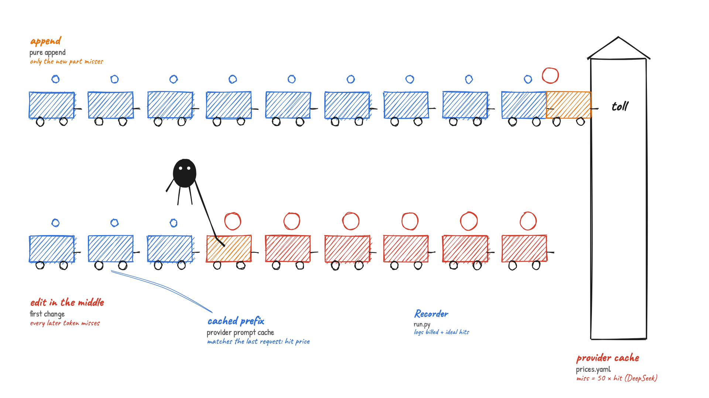
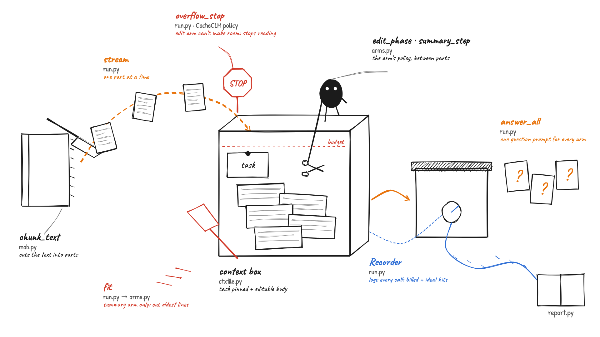
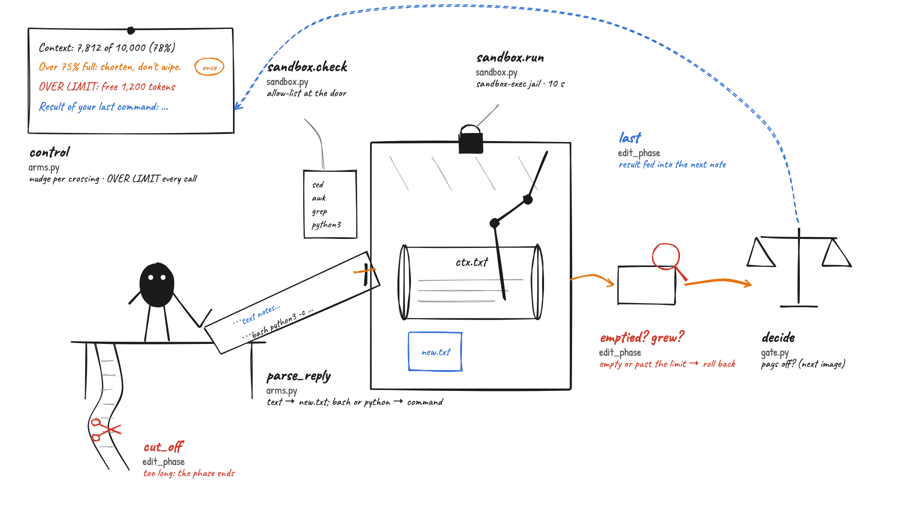
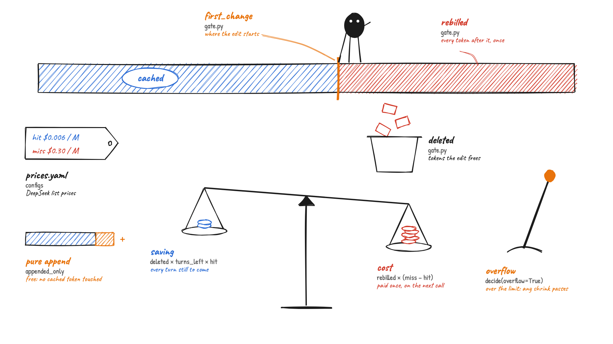
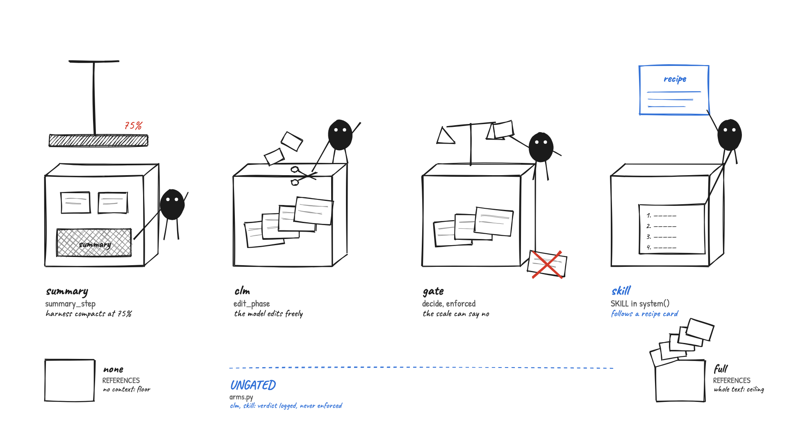

CacheCLM, drawn
Five hand-drawn pictures of how this repo works, in learning order, each grounded in the source (commit
831f3f1; full evidence in ledger.md). The question the repo tests: when a model edits its
own context (Context Language Models), does it save billed dollars under hosted prompt caching, and does a cache-aware gate help?
0. Why an edit costs money on a hosted API

A hosted prompt cache reuses only the start of a request that matches the previous one. An append leaves everything before it cached. An edit in the middle turns every later token into a cache miss, which DeepSeek bills at 50× a hit. The repo does not implement the provider's cache. It logs the billed hits next to the hits a perfect prefix cache would give.
| Drawn as | Source | What the code does |
|---|---|---|
| Toll, coin sizes | configs/prices.yaml | DeepSeek: hit $0.006/M, miss $0.30/M, output $1.20/M. |
| Blue wagons (cached prefix) | (provider side, inferred) | The provider bills an unchanged prefix at the hit price. |
| Recorder | run.py: Recorder.chat (37–55) | Logs billed cache hits and ideal hits for every call. |
1. One sample through one arm

Every arm reads the same text one part at a time into a box of fixed size (the context budget). Between parts, the arm's policy shrinks the box; if it still overflows, the oldest lines are cut. After the last part the box is frozen and every question is asked against it, while every call is metered for the cost-vs-accuracy report.
| Drawn as | Source | What the code does |
|---|---|---|
| Book cutter | mab.py: chunk_text (64) | Cuts the text into parts of chunk_tokens × 4 characters. |
| Pages in flight | run.py: stream (74–92) | For each part (plus one last pass): policy, then fit, then append the part. |
| Crate, pinned card | ctxfile.py: new_context, append (18–38) | The task block is sent first but never written to ctx.txt; parts are appended as [[CTX_TURN i role=chunk]] blocks. |
| Xiaohei with scissors | arms.py: edit_phase, summary_step (74–128) | The arm's policy: model edits (clm, gate, skill) or harness summary (summary). |
| Red blade | run.py: stream (90); arms.py: fit | Summary arm only: forced truncation of the oldest whole lines when the next part will not fit. |
| Stop sign | run.py: stream (93–98) | CacheCLM policy, not the paper's: an edit arm that cannot make room stops reading and logs overflow_stop. |
| Lidded crate, question cards | run.py: answer_all (58–77) | Each question in its own call on the frozen context, under one question prompt for every arm (line 63). |
| Meter and tape | run.py: Recorder.chat (37–52) | Logs billed cache hits and ideal hits (prefix shared with the previous request) for every call. |
| Ledger book | report.py: write_report (169–208) | Accuracy, billed cost, ideal-cache cost repriced under three price sheets. |
2. The CLM edit loop

The model never touches its context directly. It reads a note (budget use, a nudge the first time a threshold is crossed, an over-limit warning on every call), posts one command into a jail, and the result is checked (emptied? does the gate allow it?) before being fed back in the next note. A reply cut off by the length cap ends the phase without a retry.
| Drawn as | Source | What the code does |
|---|---|---|
| Wall note | arms.py: control (58–71); edit_phase (79) | Budget line; OVER LIMIT every call while the next part won't fit; nudge only for thresholds crossed since the previous phase started. |
| Slip (text + bash) | arms.py: parse_reply (56–67) | The first bash block, or a python block run as edit.py; text blocks become new.txt; echo READY and true mean READY. |
| Clipboard at the door | sandbox.py: check (25–43) | Only sed, awk, grep, head, tail, cat, wc, echo, printf, mv, cp, python3; no heredocs, $( or backticks. |
| Glass booth, padlock | sandbox.py: run (46–73) | Temp dir under sandbox-exec: no network, writes only inside, no home reads except Python; 10 s timeout with process-group kill; reads back only a regular file. |
| Magnifier | arms.py: edit_phase (126–133) | An edit that leaves only header lines, or grows the context past the budget, is rolled back. |
| Scale | gate.py: decide (13–27) | The cache-aware gate (image 3). |
| Cut slip | arms.py: edit_phase (89–91) | No command and finish_reason == "length": log cut_off, end the phase. |
| Blue string | arms.py: edit_phase (110) | The command's output (plus the gate's reason when it rejects) goes into the next note. |
3. The cache-aware gate

A provider bills an unchanged prompt prefix at the cheap hit price. An edit breaks that prefix at its first change, so every token after it is billed once at the miss price on the next call. The gate lets an edit through only if the tokens it frees, times the turns still to come, at the hit price, outweigh that one-time cost. A pure append is free; while over the limit, any shrinking edit passes.
allow if deleted × turns_left × hit ≥ rebilled × (miss − hit)
or (over the limit and the edit shrinks the context)
DeepSeek: hit $0.006/M, miss $0.30/M → a token after the first change costs ~49 turns of a deleted token's saving
| Drawn as | Source | What the code does |
|---|---|---|
| Orange mark | gate.py: first_change (8–10) | Common-prefix length of old and new context. |
| Red tail | gate.py: decide (17) | rebilled: every token after the first change, including inserted text; 0 for a pure append. |
| Bin | gate.py: decide (18) | deleted: how much shorter the context got. |
| Pans | gate.py: decide (19–20, 24) | saving vs cost. |
| Lever | gate.py: decide (22–23) | Overflow override. |
| Price tag | configs/prices.yaml | DeepSeek list prices; OpenAI and Anthropic for repricing. |
| "cached" stamp | (provider side, inferred) | The provider's prefix cache is modelled by the gate and Recorder, not implemented here. |
4. Four arms, two references

The arms differ only in who shrinks the box and what can stop them. summary: the harness compacts older parts into one summary at 75%. clm: the model edits freely. gate: the model edits, but the gate can refuse. skill: clm plus a recipe in the system prompt. The gate's verdict is logged for clm and skill but only enforced for gate. none and full are the floor and ceiling.
| Drawn as | Source | What the code does |
|---|---|---|
| Press, brick | arms.py: summary_step (113–128); ctxfile.split_for_summary (58–64) | Past summary_at, older blocks become one summary block; the last keep_recent_chunks parts stay. |
| Scissors | arms.py: edit_phase (74–110) | Model-written bash edits, up to 3 per part (+3 while over the limit). |
| Scale at the mouth | arms.py: edit_phase (103–104); ARMS, UNGATED (10–12) | allow = allow or arm in UNGATED: only gate is stopped. |
| Recipe card | arms.py: SKILL (25–33), system (43–48) | Books: event log of the newest part every time. Facts: dedupe, then delete the oldest. |
| Empty / overflowing crate | arms.py: REFERENCES (11); run.py: run_sample (109–113) | none: questions with no context. full: the whole text, no budget. |
Technical reference
Module map (960 lines of Python)
| File | Lines | Role |
|---|---|---|
__main__.py | 85 | CLI cacheclm smoke | run | report; job order; per-sample settings; budget stop. |
run.py | 125 | One sample × one arm: stream, answer, log; Recorder with billed and ideal cache hits. |
arms.py | 139 | Prompts (prompt A, skill), control note, edit loop, summary step, forced fit. |
gate.py | 27 | The cache-aware edit gate. |
sandbox.py | 73 | Allow-list and sandbox-exec jail for model commands. |
ctxfile.py | 64 | [[CTX_TURN i role=...]] blocks, normalize, cut oldest lines, split for summary. |
llm.py | 74 | OpenAI-compatible client; disk reply cache (replays free); retries; cost per call. |
budget.py | 25 | Persisted spend total with a hard cap. |
mab.py | 110 | MemoryAgentBench rows (SHA-256 pinned), prompts, chunking, scoring, gold-fact lookup. |
report.py | 208 | Units, paired bootstrap, repricing, fact error split, chart, summary.md/html. |
files.py | 29 | Atomic writes, JSONL read/append. |
Configs
| File | Use |
|---|---|
configs/base.yaml | DeepSeek Flash run: 32K budget, 4K parts, 16,384-token edit replies, nudges at 25/50/75%, $5 cap; full-run and smoke samples. |
configs/local.yaml | Free local check on Ollama qwen3.5-9b-32k: 10K budget (4K for facts), 10,000-token replies, 3 answerable tasks; spend is simulated. |
configs/prices.yaml | USD per 1M tokens for DeepSeek, OpenAI, Anthropic. |
Log events (one JSONL per arm × sample × repeat, in runs*/)
call (tokens, billed and ideal hits, latency, finish reason) · edit (command, allowed, reason, changed, refused, emptied, rebilled/deleted tokens) · cut_off · summary · forced_truncation · step · answer (correct, gold fact present) · done (accuracy, unit, final context).
Commands
uv run cacheclm smoke # DeepSeek smoke (all 6 arms) uv run cacheclm run # full run (needs approval and budget) uv run cacheclm report [--smoke] uv run cacheclm smoke --config configs/local.yaml # free local check uv run pytest -q # 89 tests
Images are deterministic SVG sketches (rough.js) rendered to PNG; sources and render.sh are in src/.